Identidad visual
Concepto, logotipo vectorial, claims, tipografía, color, aplicaciones visuales y primera portada digital.
IDENTIDAD DESDE CERO / 01
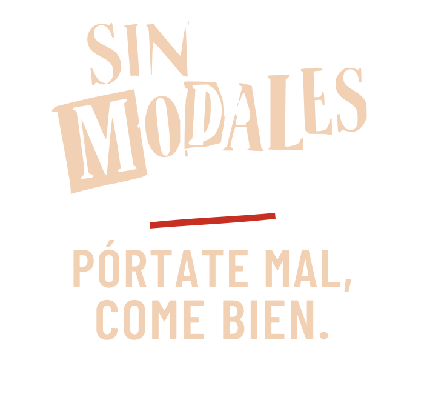
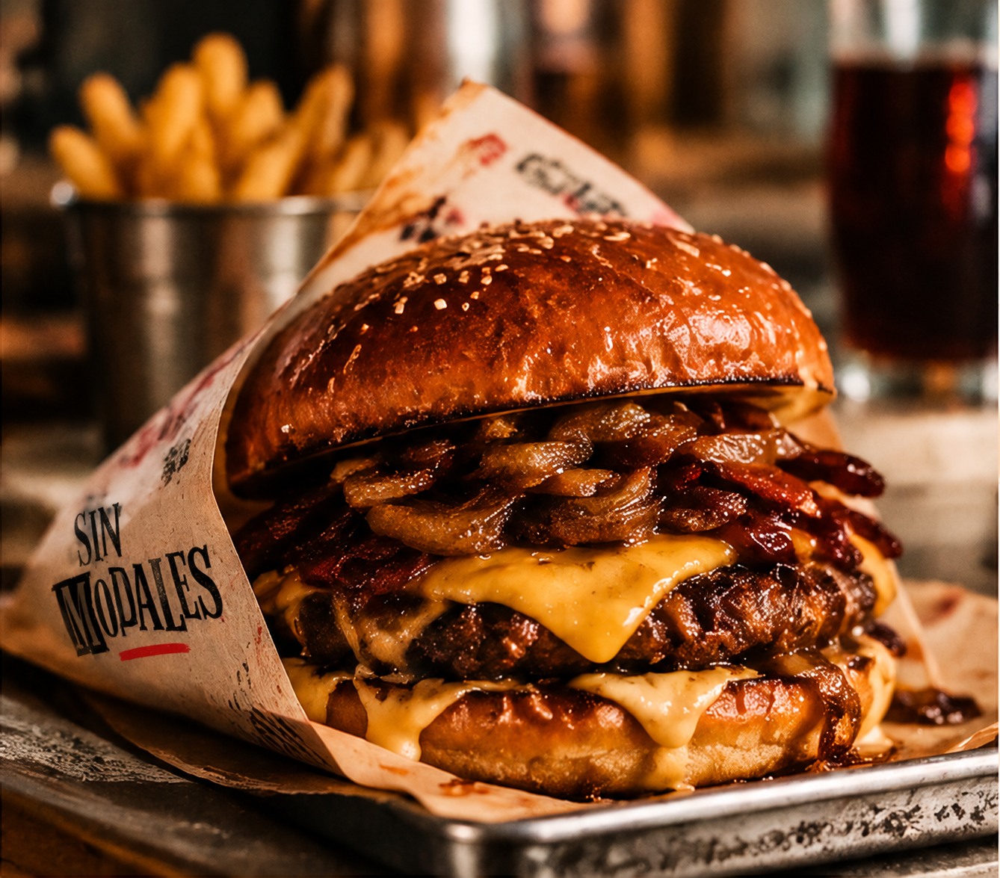
EL PUNTO DE PARTIDA
Sin Modales es un proyecto de identidad integral para una hamburguesería. La propuesta arranca con una voz propia: directa, divertida y reconocible, sin perder claridad.
El sistema une logotipo vectorial, dos claims, tipografía condensada, una paleta de carbón, crema y rojo, fotografía gastronómica y un símbolo de mano reservado para los detalles.
La misma identidad debe funcionar en una fachada, una carta, un envoltorio y una pantalla. Cada pieza conserva el carácter del conjunto.
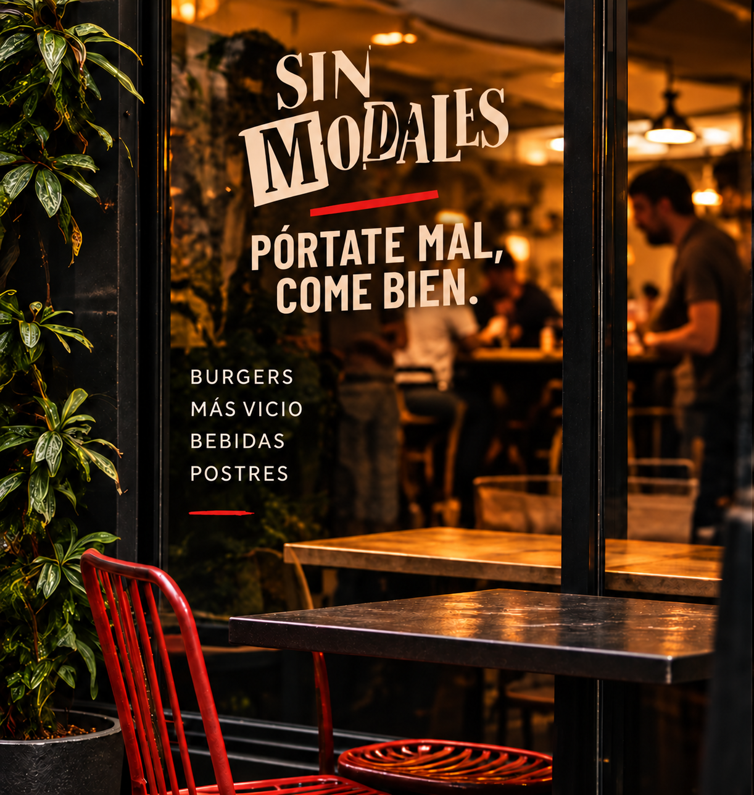
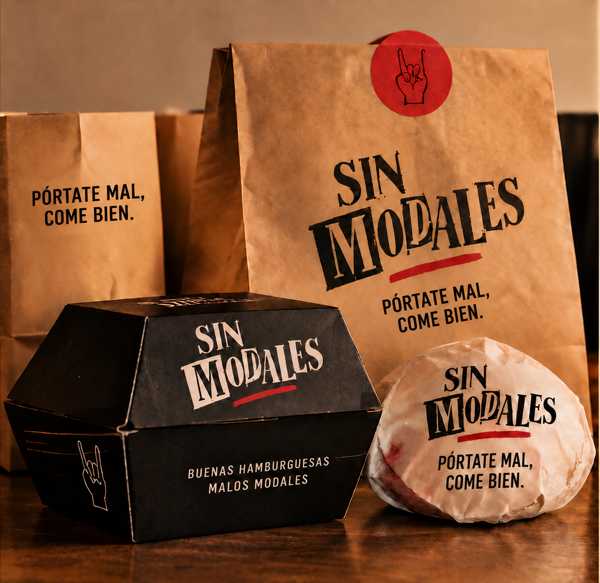
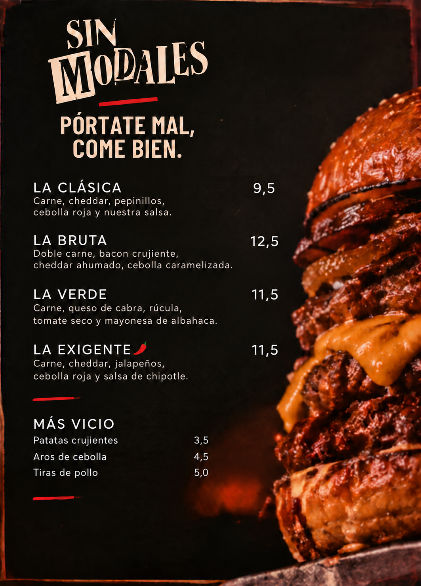
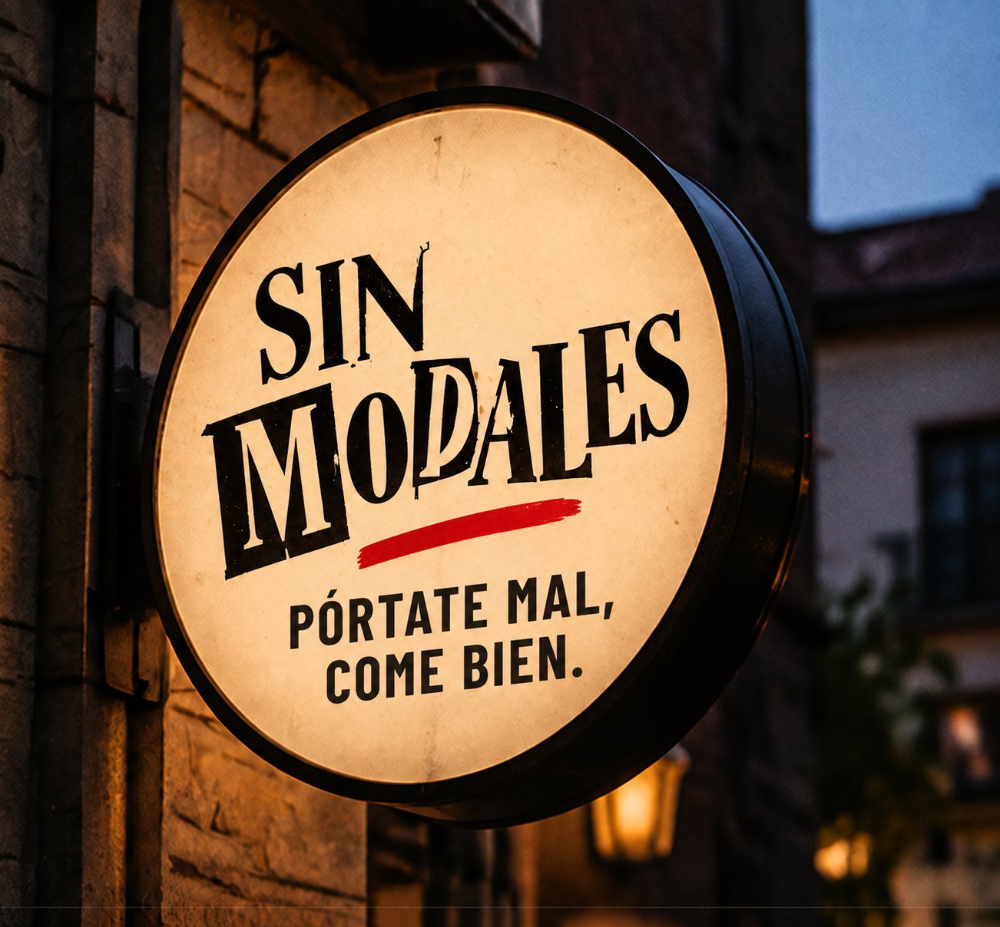
DIRECCIÓN FOTOGRÁFICA
Producto, local y personas cuentan la misma historia: hamburguesas sin ceremonia y momentos que apetece compartir.
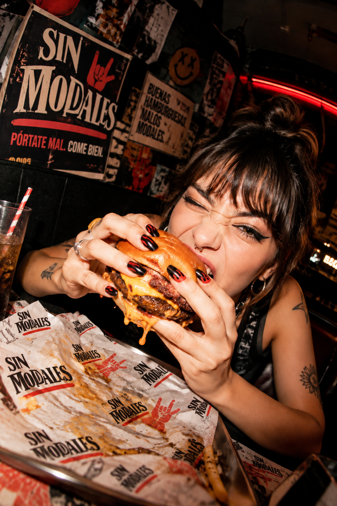
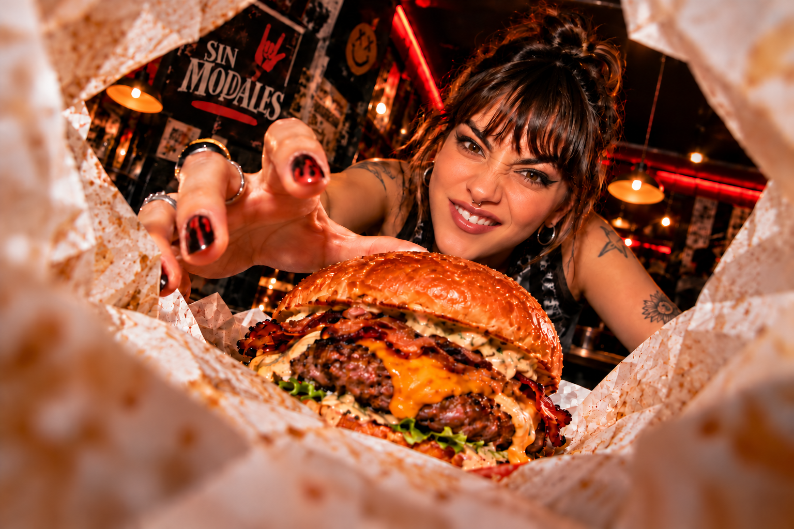
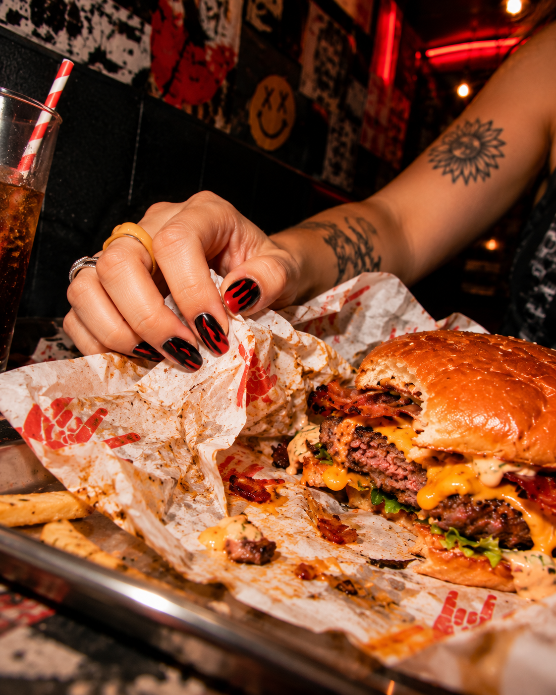
CONTENIDO SOCIAL / UGC
Una simulación de contenido espontáneo muestra el producto en manos de las personas. El lenguaje visual sigue siendo reconocible fuera de las aplicaciones formales.
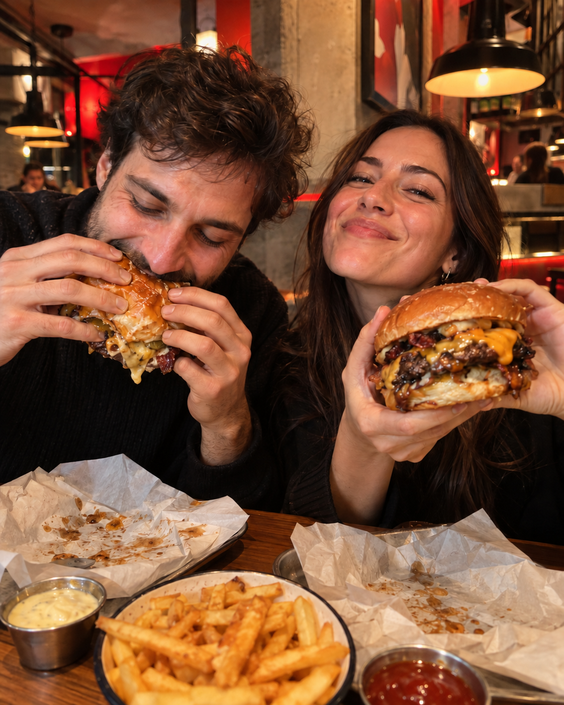
DOS FRASES, UN MISMO CARÁCTER
La línea roja separa el logotipo del claim. La mano aparece como firma secundaria, no compite con el nombre.
DE LA IDENTIDAD A UNA EXPERIENCIA COMPLETA
El proyecto muestra cómo una identidad se convierte en un sistema completo: concepto, lenguaje visual, aplicaciones, web y herramientas para el negocio. Cada fase amplía la experiencia de marca.
Concepto, logotipo vectorial, claims, tipografía, color, aplicaciones visuales y primera portada digital.
Estructura de contenidos y recorridos para llevar la identidad a la web y sus herramientas.
Una experiencia visual para descubrir la marca, explorar sus productos y elegir desde cualquier pantalla.
Una herramienta para actualizar productos, imágenes y mensajes manteniendo la coherencia de marca.
Un recorrido de pedido para mesa y recogida integrado en la experiencia de la marca.
Una pantalla clara para recibir y seguir el trabajo de cocina.
Herramientas para organizar el día a día del local.
Una base preparada para conectar nuevos servicios cuando el proyecto lo necesite.
Revisión de cada recorrido y presentación del sistema en todos sus soportes.
La identidad es el punto de partida de una experiencia digital y nuevas herramientas de marca.
Ver otras identidades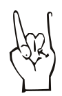
IDENTIDAD DESDE CERO POR BEATRIZ MORÓN